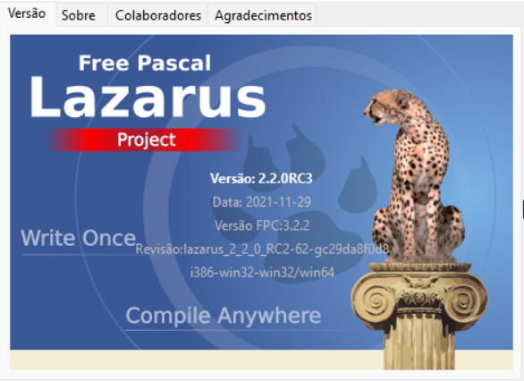
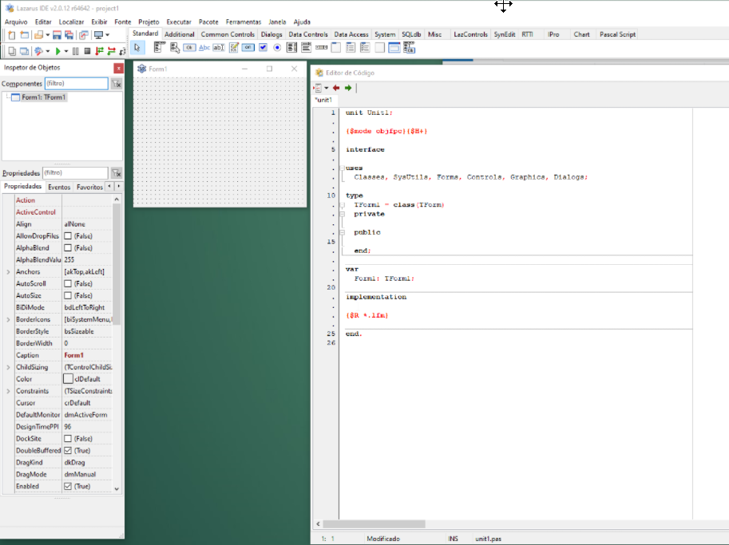

O Lazarus e uma IDE Rad, uma ferramenta que nos permite rapidamente desenvolvermos programas de computador. Um diferencial para outras linguagens como C/C++, Python e outras é que usando esta IDE podemos criar formulários, componentes, métodos e procedimentos ao mesmo tempo e de maneira rápida. Em outras linguagens, nós desenhamos um prototipo das telas que o programa terá e depois usando uma IDE criamos as telas via código e num segundo passo os métodos e procedimentos. Essas linguagens não acompanham uma IDE especifica, por exemplo, existem muitas IDEs para programar em Python, mas elas agilizam na codificação, no design de tela você terá de escrever seu próprio código. Em C/C++ há IDEs da mesma forma e algumas ferramentas como QTDesigner ajudam a criar telas, mmas como uma framework a parte.
Assim podemos dizer que o Lazarus é uma IDE Rad para programar usando a linguagem FreePascal(FPC).
Agora que o Lazarus está instalado, a primeira coisa a se fazer é observar a versão que estamos executando. Vá no menu Ajuda->Sobre o Lazarus e observar qual a versão que realmente estamos usando:

As janelas do IDE Lazarus são soltas uma da outra(“vazadas” daqui em diante), similar ao Delphi 7.
Isso tem algumas vantagens operacionais, por exemplo separar as janelas desejadas em diferentes monitores, mas há o inconveniente de ser um pouco espalhafatoso no que diz respeito à organização quando temos apenas 1 monitor, por isso há também a opção de usar as janelas docadas umas às outras criando a aparência similar ao Delphi XE.
Creio que há vantagens e desvantagens nos dois modos, então será o desenvolvedor que optará como será mais produtivo e confortável. O mais importante é aprender a usar bem as teclas de atalho, por exemplo, F12 para alternar entre o modo de edição de código e design de formulário, ALT+F1 para…. e assim por diante. Muitos se acostumaram a usar o Delphi com as janelas já docadas, se esta também for sua preferência, a seguir vamos às instruções necessárias para deixá-lo similar - porém não exatamente igual.
Mesmo que não queira docá-las, siga estas instruções e pule as partes que instruem a docar.
